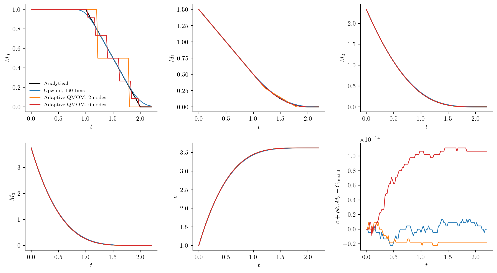

Dissolving a finite population
How does a closed slurry return all its solid material to solution while its particles disappear? A material balance alone cannot answer this: it must be paired with a population balance that removes particles reaching zero size. This example has an analytical solution, so it also separates errors in the disappearance approximation from errors in material exchange.
A shrinking distribution and a shared solute
Take a uniform initial number density between lengths a=1 and b=2, with N0=1 particle per process volume. Each particle shrinks at G=-g=-1. There is no nucleation, aggregation, breakage or material feed. Using dimensionless size and time, the equations and initial conditions are
\[\frac{\partial n(L,t)}{\partial t} +\frac{\partial[-g n(L,t)]}{\partial L}=0,\qquad L>0,\]
\[n(L,0)=\begin{cases}N_0/(b-a),&a\leq L\leq b,\\0,&\text{otherwise},\end{cases} \qquad \frac{dc(t)}{dt}=-\rho k_v\frac{dM_3(t)}{dt},\qquad c(0)=1, \quad \rho k_v=0.7.\]
Particles reaching L=0 disappear. No incoming boundary data are imposed there, because the characteristics leave the nonnegative size domain. Number starts to decline at t=a/g=1; the continuum is empty at t=b/g=2. The exact moments and solute concentration are
\[M_k(t)=\frac{N_0}{(b-a)(k+1)} \left[(b-gt)_+^{k+1}-(a-gt)_+^{k+1}\right],\qquad c(t)=c(0)+\rho k_v[M_3(0)-M_3(t)].\]
At zero a particle has no remaining L³ material. Removal therefore changes number without returning its initial mass a second time.
Specify the two numerical representations
The moment calculation declares its boundary approximation explicitly:
model = PBMModel(shrinkage=Growth((L,p,t,ctx)->-1.0))
basis = MomentSet(0:11; coordinate=:length)
op = compile(model, basis; closure=RankAdaptiveQMOM(6;rtol=1e-10),
boundary=MomentBoundary(left=:absorb))
initial = [dissolution_reference(k,0.0) for k in basis.orders]
exchange = MomentExchange(:crystals,:solute,3;factor=0.7)The sectional calculation instead selects an upwind zero-boundary trace:
grid = Grid1D(range(0.0,3.0;length=161);coordinate=:length)
op = compile(model, grid; growth_scheme=Upwind(),
bc=SizeBC(AbsorbingZero(),NoFlux()))
initial = [max(0.0,min(r,2.0)-max(l,1.0))
for (l,r) in zip(grid.edges[1:end-1],grid.edges[2:end])]
exchange = ConservativeExchange(:crystals,:solute,(L,p,t,ctx)->0.7*L^3)For either representation, pack the population, bulk state and historical removal ledger into one system:
system = PBMSystem((crystals=op,); exchanges=(exchange,),
nonnegative_bulk=(:solute,),
accounting=(CumulativeAccounting(:crystals;properties=(volume=3,)),))
problem = PBMProblem(system,(crystals=initial,),(0.0,2.2);bulk0=(solute=1.0,))
solution = simulate(problem;dt=0.005,saveat=0.0:0.02:2.2,method=MeasureEuler())
number_removed = cumulative(problem,solution.u[end],:crystals,:extinction)These fragments show the representation choices; the complete script below contains the analytical helper, refinement runs and CSV export.
Results and their interpretation

The moment number curve is a sequence of atomic removals. Increasing the maximum rank from two to six reduces its maximum number error from about 0.28 to 0.114 on this output schedule. Decreasing the timestep alone does not remove this continuous-to-atomic approximation error. For a truly atomic initial population with resolved rank, the constant-velocity hitting events are exact within reconstruction/event tolerances; that is tested separately.
The sectional calculation has numerical spreading and a small tail after the continuum extinction time. Increasing from 80 to 160 bins reduces maximum number error from about 0.092 to 0.063. The method retains that positive tail instead of deleting it with an arbitrary threshold. Its initial material uses the discrete center-weighted third moment, which approaches the continuum initial value under grid refinement.
The plotted material error uses each calculation's own discrete initial inventory. Its maximum magnitude is below 2e-14 in these runs. This small balance error does not establish accuracy of the number distribution: the moment staircase and sectional tail are visible despite conserved material. The selected moments and solute curve provide independent physical comparisons. Full extinction is an exactly zero raw-moment state with active rank zero; absolute moments remain zero. A normalized size distribution or mean size is undefined there, so normalized observations raise an explicit error rather than producing NaNs or fabricating a distribution.
The method, restrictions, numerical tolerances and reservoir conventions are explained in Realizable evolution and particle removal. In particular, these are batch extinction calculations; the supported axial verification does not include extinction events.
Run and regenerate
From the repository root:
julia --project=. examples/realizable_dissolution.jl
python docs/benchmarks/plot_dissolution.py --usetex
julia --project=. examples/realizable_startup.jl
julia --project=. examples/realizable_axial_transport.jlThe first command writes the numerical data. The plotting command needs NumPy, Matplotlib and a LaTeX installation; omit --usetex to use Matplotlib's built-in mathematical typography. It draws no grid lines. The other two scripts verify exact-zero startup, coupled growth with nucleation and aggregation, and nonuniform axial moment/bulk transport.
Minimal run and full reproduction
Run this block from the repository root. It constructs and solves one problem; including a driver does not run its CSV exports.
using PopulationBalanceModels
include("examples/realizable_dissolution.jl")
problem = dissolution_problem(:moments; resolution=4)
solution = simulate(problem; method=MeasureEuler(), dt=0.01, saveat=0.0:0.02:2.2)
solute = [bulk(problem, u, :solute) for u in solution.u]
removed = cumulative(problem, last(solution.u), :crystals, :extinction)The figure-generation drivers and supporting sources are available below. Keep the repository's relative paths; the benchmark guide lists plotting commands and optional environments.